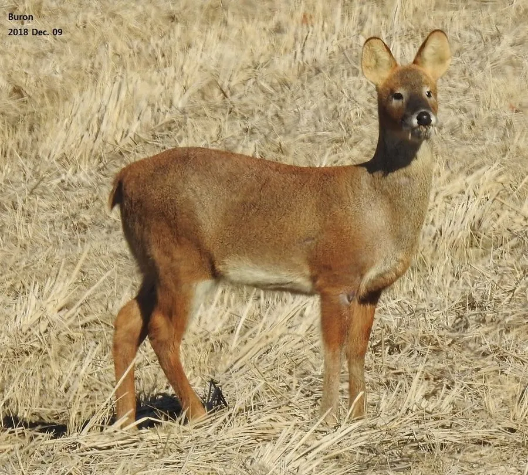

哺乳动物 · 动物界
獐 Hydropotes inermis

中国东部湿地与丘陵的小型鹿类，雌雄都不长角，雄鹿长有外露的獠牙状犬齿，善于游泳，生性隐蔽。
- 分类
- 门脊索动物门纲哺乳纲目偶蹄目科鹿科属獐属
- 栖息环境
- 湿地、丘陵灌丛与河岸草地，善游泳
- 地理分布
- 中国长江流域及东南沿海，朝鲜半岛也有分布
- 保护级别
- IUCN 易危（VU）；中国国家二级保护动物
物种志
獐体长 0.9–1.1 米，肩高 0.5–0.6 米，体重 9–18 kg，是体型较小的鹿类。它的毛色为黄褐至灰黄色，腹部和喉部较浅，尾巴极短；雌雄都不长角，雄鹿的上犬齿发达，向下外露形成獠牙状，用于争斗和展示。
獐分布于中国长江流域及东南沿海的湿地、丘陵灌丛和河岸草地，朝鲜半岛也有分布，是中国东部湿地的重要鹿类。它多在晨昏活动，独居或成对，以草、树叶、嫩枝和水生植物为食，善游泳，受惊时常跳入水中逃走。繁殖季雄鹿用獠牙争夺配偶；雌兽妊娠期约 6–7 个月，每胎 1–2 仔。由于湿地开发、非法捕猎和栖息地破碎，獐的野生种群明显下降，被列为易危，中国将其列为国家二级保护动物。
形态与习性
- 食性草、树叶、嫩枝与水生植物
- 体长0.9–1.1 m，肩高 0.5–0.6 m
- 体重9–18 kg
- 寿命野外约 10–12 年
- 繁殖妊娠期约 6–7 个月，每胎 1–2 仔
- 犬齿雄鹿上犬齿发达，外露呈獠牙状
- 鹿角雌雄都不长角，是鹿科中的特例
趣味知识
- 獐是鹿科中少数雌雄都不长角的物种。
- 雄獐的上犬齿外露成獠牙，用来争斗和展示。
- 獐善于游泳，受惊时常跳入水中逃走。
- 中国东部湿地开发是獐种群下降的重要原因。